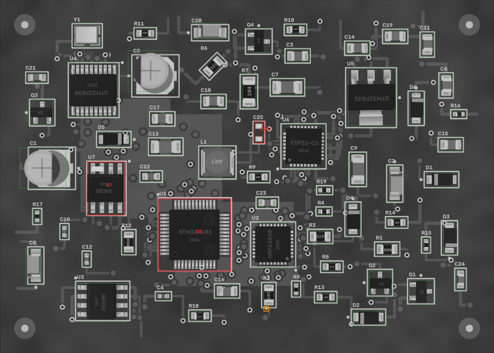
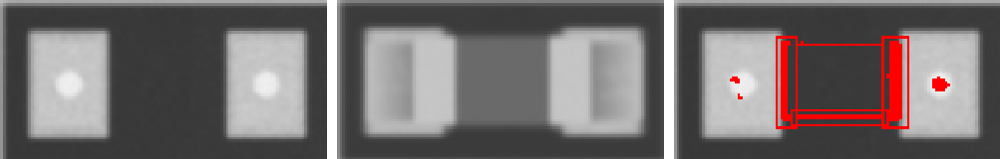
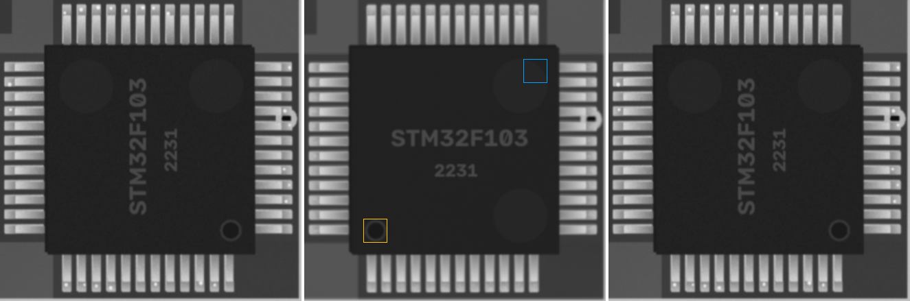
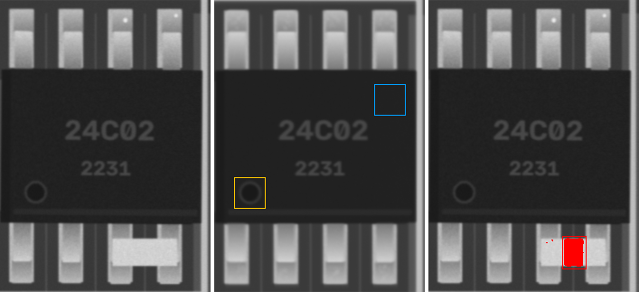
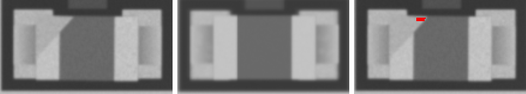
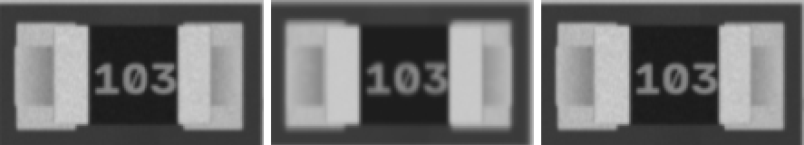
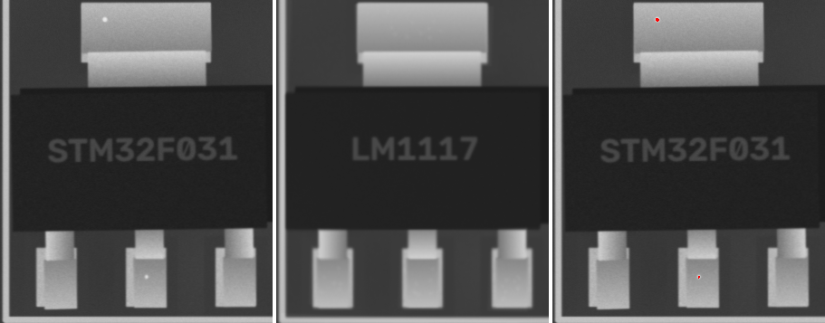

FAIL
2026-10-07 10:02:54 · позиций 63 · FAIL 3 · аномалий вне деталей 1 · невязка фидуциалов 0.02055636344292918 мм · ECC 0.9948

Кроп: живая плата (выровнена) | эталон (жёлтое — метка полярности,
синее — место метки при 180°) | карта отклонений σ.
MISSING — корпус не найден; MISMATCH — на месте не то, что в эталоне (голые площадки, другая деталь,
повреждение); POLARITY — развёрнута на 180° / метка не там; SHIFT / ROTATED — вне допуска;
ANOMALY — локальное отклонение от golden (мост, шарик, лишний припой, посторонний предмет).
| C25 1u · 0603 | FAIL MISMATCH |  ncc 0.747 · ncc_thr 0.6 · mad 37.7 · mad_thr 9.8 · dx_mm 0.0 · dy_mm -0.023 · dtheta_deg -0.0 · anomaly_px 327 |
| U1 STM32F103 · LQFP-48 | FAIL POLARITY |  ncc 0.79 · ncc_thr 0.6 · mad 0.7 · mad_thr 6.9 · mark_ncc {'0': 0.085, '90': 0.976, '180': 0.015, '270': -0.003} · dx_mm 0.023 · dy_mm 0.023 · dtheta_deg -0.0 · anomaly_px 0 |
| U7 24C02 · SOIC-8 | FAIL ANOMALY |  ncc 0.973 · ncc_thr 0.6 · mad 1.0 · mad_thr 7.3 · mark_ncc {'0': 0.97, '180': 0.098} · dx_mm 0.023 · dy_mm 0.047 · dtheta_deg -0.0 · anomaly_px 649 |
| C1 100u · CP_Elec_5x5.8 | PASS | ncc 0.992 · ncc_thr 0.6 · mad 3.1 · mad_thr 8.6 · mark_ncc {'0': 0.994, '180': -0.708} · dx_mm 0.047 · dy_mm 0.0 · dtheta_deg -0.0 · anomaly_px 0 |
| C10 1u · 0805 | PASS | ncc 0.986 · ncc_thr 0.6 · mad 2.6 · mad_thr 8.1 · dx_mm -0.047 · dy_mm -0.047 · dtheta_deg -0.0 · anomaly_px 0 |
| C11 4u7 · 0805 | PASS | ncc 0.996 · ncc_thr 0.6 · mad 2.3 · mad_thr 8.5 · dx_mm -0.023 · dy_mm 0.0 · dtheta_deg -0.0 · anomaly_px 0 |
| C12 10u · 0402 | PASS | ncc 0.981 · ncc_thr 0.6 · mad 3.3 · mad_thr 10.1 · dx_mm -0.023 · dy_mm -0.023 · dtheta_deg -0.0 · anomaly_px 0 |
| C13 1u · 1206 | PASS | ncc 0.987 · ncc_thr 0.6 · mad 2.3 · mad_thr 8.3 · dx_mm -0.023 · dy_mm 0.047 · dtheta_deg -0.0 · anomaly_px 0 |
| C14 100n · 0805 | PASS | ncc 0.991 · ncc_thr 0.6 · mad 2.6 · mad_thr 8.2 · dx_mm -0.023 · dy_mm -0.023 · dtheta_deg -0.0 · anomaly_px 0 |
| C15 4u7 · 0805 | PASS | ncc 0.992 · ncc_thr 0.6 · mad 2.7 · mad_thr 8.6 · dx_mm 0.047 · dy_mm 0.0 · dtheta_deg -0.0 · anomaly_px 0 |
| C16 10n · 0805 | PASS |  ncc 0.972 · ncc_thr 0.6 · mad 7.0 · mad_thr 8.5 · dx_mm 0.0 · dy_mm 0.023 · dtheta_deg -0.0 · anomaly_px 0 |
| C17 22p · 0805 | PASS | ncc 0.99 · ncc_thr 0.6 · mad 2.0 · mad_thr 8.2 · dx_mm 0.047 · dy_mm 0.023 · dtheta_deg -0.0 · anomaly_px 0 |
| C18 4u7 · 0402 | PASS | ncc 0.986 · ncc_thr 0.6 · mad 3.2 · mad_thr 9.3 · dx_mm 0.0 · dy_mm -0.023 · dtheta_deg -0.0 · anomaly_px 0 |
| C19 10n · 0805 | PASS | ncc 0.996 · ncc_thr 0.6 · mad 2.5 · mad_thr 8.0 · dx_mm -0.023 · dy_mm 0.0 · dtheta_deg -0.0 · anomaly_px 0 |
| C2 Tantalum_Case-A · Tantalum_Case-A | PASS | ncc 0.994 · ncc_thr 0.6 · mad 2.5 · mad_thr 14.5 · mark_ncc {'0': 0.997, '180': 0.648} · dx_mm -0.07 · dy_mm 0.0 · dtheta_deg -0.0 · anomaly_px 0 |
| C20 Tantalum_Case-A · Tantalum_Case-A | PASS | ncc 0.992 · ncc_thr 0.6 · mad 2.3 · mad_thr 31.9 · mark_ncc {'0': 0.999, '180': 0.601} · dx_mm 0.0 · dy_mm -0.023 · dtheta_deg -0.0 · anomaly_px 0 |
| C21 1u · 0603 | PASS | ncc 0.99 · ncc_thr 0.6 · mad 2.4 · mad_thr 8.8 · dx_mm 0.0 · dy_mm 0.023 · dtheta_deg 2.0 · anomaly_px 0 |
| C22 22p · 0603 | PASS | ncc 0.995 · ncc_thr 0.6 · mad 2.5 · mad_thr 9.6 · dx_mm 0.0 · dy_mm 0.0 · dtheta_deg -0.0 · anomaly_px 0 |
| C23 4u7 · 0603 | PASS | ncc 0.992 · ncc_thr 0.6 · mad 3.5 · mad_thr 9.5 · dx_mm 0.023 · dy_mm 0.0 · dtheta_deg -0.0 · anomaly_px 0 |
| C24 22p · 0603 | PASS | ncc 0.983 · ncc_thr 0.6 · mad 2.6 · mad_thr 8.6 · dx_mm 0.047 · dy_mm -0.023 · dtheta_deg -0.0 · anomaly_px 0 |
| C3 4u7 · 0805 | PASS | ncc 0.945 · ncc_thr 0.6 · mad 3.6 · mad_thr 8.4 · dx_mm -0.07 · dy_mm -0.047 · dtheta_deg -0.0 · anomaly_px 0 |
| C4 4u7 · 0402 | PASS | ncc 0.992 · ncc_thr 0.6 · mad 4.1 · mad_thr 9.6 · dx_mm 0.0 · dy_mm 0.0 · dtheta_deg -0.0 · anomaly_px 0 |
| C5 100u · CP_Elec_5x5.8 | PASS | ncc 0.986 · ncc_thr 0.6 · mad 7.9 · mad_thr 14.3 · mark_ncc {'0': 0.956, '180': 0.303} · dx_mm -0.023 · dy_mm -0.023 · dtheta_deg -0.0 · anomaly_px 0 |
| C6 4u7 · 0805 | PASS | ncc 0.996 · ncc_thr 0.6 · mad 2.3 · mad_thr 8.1 · dx_mm 0.0 · dy_mm 0.023 · dtheta_deg -0.0 · anomaly_px 0 |
| C7 10n · 1206 | PASS | ncc 0.995 · ncc_thr 0.6 · mad 2.2 · mad_thr 8.4 · dx_mm 0.023 · dy_mm -0.023 · dtheta_deg -0.0 · anomaly_px 0 |
| C8 Tantalum_Case-A · Tantalum_Case-A | PASS | ncc 0.994 · ncc_thr 0.6 · mad 2.1 · mad_thr 11.5 · mark_ncc {'0': 0.998, '180': 0.145} · dx_mm 0.023 · dy_mm 0.0 · dtheta_deg -0.0 · anomaly_px 0 |
| C9 10n · 1206 | PASS | ncc 0.993 · ncc_thr 0.6 · mad 2.1 · mad_thr 8.2 · dx_mm -0.023 · dy_mm -0.023 · dtheta_deg -0.0 · anomaly_px 0 |
| D1 SOD-123 · SOD-123 | PASS | ncc 0.997 · ncc_thr 0.6 · mad 1.0 · mad_thr 7.0 · mark_ncc {'0': 0.978, '180': -0.008} · dx_mm 0.0 · dy_mm -0.023 · dtheta_deg -0.0 · anomaly_px 0 |
| D2 SOD-123 · SOD-123 | PASS | ncc 0.995 · ncc_thr 0.6 · mad 1.0 · mad_thr 7.0 · mark_ncc {'0': 0.898, '180': 0.032} · dx_mm -0.047 · dy_mm 0.0 · dtheta_deg -0.0 · anomaly_px 0 |
| D3 SOD-123 · SOD-123 | PASS | ncc 0.996 · ncc_thr 0.6 · mad 1.1 · mad_thr 7.0 · mark_ncc {'0': 0.959, '180': 0.093} · dx_mm 0.023 · dy_mm 0.0 · dtheta_deg -0.0 · anomaly_px 0 |
| D4 SOD-123 · SOD-123 | PASS | ncc 0.998 · ncc_thr 0.6 · mad 0.7 · mad_thr 6.8 · mark_ncc {'0': 0.94, '180': 0.054} · dx_mm 0.0 · dy_mm 0.0 · dtheta_deg -0.0 · anomaly_px 0 |
| D5 SOD-123 · SOD-123 | PASS | ncc 0.995 · ncc_thr 0.6 · mad 0.8 · mad_thr 6.9 · mark_ncc {'0': 0.964, '180': 0.066} · dx_mm 0.0 · dy_mm 0.047 · dtheta_deg -0.0 · anomaly_px 0 |
| D6 SOD-123 · SOD-123 | PASS | ncc 0.997 · ncc_thr 0.6 · mad 1.3 · mad_thr 7.5 · mark_ncc {'0': 0.984, '180': 0.081} · dx_mm -0.07 · dy_mm 0.0 · dtheta_deg -0.0 · anomaly_px 0 |
| L1 4u7 · L_4x4 | PASS | ncc 0.994 · ncc_thr 0.6 · mad 2.2 · mad_thr 8.4 · dx_mm 0.0 · dy_mm 0.023 · dtheta_deg -0.0 · anomaly_px 0 |
| Q1 A7 · SOT-23 | PASS | ncc 0.987 · ncc_thr 0.6 · ncc_180 0.401 · mad 1.1 · mad_thr 7.0 · mad_180 5.1 · dx_mm 0.0 · dy_mm 0.023 · dtheta_deg -0.0 · anomaly_px 0 |
| Q2 A7 · SOT-23 | PASS | ncc 0.978 · ncc_thr 0.6 · ncc_180 0.441 · mad 0.9 · mad_thr 7.0 · mad_180 4.7 · dx_mm 0.023 · dy_mm 0.07 · dtheta_deg -0.0 · anomaly_px 0 |
| Q3 W1 · SOT-23 | PASS | ncc 0.996 · ncc_thr 0.6 · ncc_180 0.725 · mad 0.8 · mad_thr 7.1 · mad_180 5.1 · dx_mm 0.0 · dy_mm 0.0 · dtheta_deg -0.0 · anomaly_px 0 |
| Q4 S4 · SOT-23 | PASS | ncc 0.98 · ncc_thr 0.6 · ncc_180 0.405 · mad 1.0 · mad_thr 7.1 · mad_180 4.4 · dx_mm 0.0 · dy_mm 0.0 · dtheta_deg -0.0 · anomaly_px 0 |
| R1 0R · 0805 | PASS | ncc 0.99 · ncc_thr 0.6 · mad 5.3 · mad_thr 9.7 · dx_mm -0.023 · dy_mm 0.023 · dtheta_deg -0.0 · anomaly_px 0 |
| R10 220 · 0603 | PASS | ncc 0.988 · ncc_thr 0.6 · mad 4.3 · mad_thr 10.2 · dx_mm 0.023 · dy_mm 0.07 · dtheta_deg -0.0 · anomaly_px 0 |
| R11 0R · 0603 | PASS | ncc 0.994 · ncc_thr 0.6 · mad 5.0 · mad_thr 10.3 · dx_mm 0.0 · dy_mm -0.023 · dtheta_deg -0.0 · anomaly_px 0 |
| R12 0R · 0805 | PASS | ncc 0.994 · ncc_thr 0.6 · mad 4.5 · mad_thr 10.0 · dx_mm 0.0 · dy_mm 0.0 · dtheta_deg -0.0 · anomaly_px 0 |
| R13 1k · 0603 | PASS | ncc 0.994 · ncc_thr 0.6 · mad 5.0 · mad_thr 10.5 · dx_mm 0.0 · dy_mm 0.0 · dtheta_deg -0.0 · anomaly_px 0 |
| R14 0R · 0603 | PASS | ncc 0.992 · ncc_thr 0.6 · mad 4.8 · mad_thr 10.4 · dx_mm 0.023 · dy_mm -0.023 · dtheta_deg -0.0 · anomaly_px 0 |
| R15 1k · 0402 | PASS | ncc 0.993 · ncc_thr 0.6 · mad 6.2 · mad_thr 12.7 · dx_mm 0.0 · dy_mm 0.0 · dtheta_deg -0.0 · anomaly_px 0 |
| R16 0R · 0402 | PASS | ncc 0.979 · ncc_thr 0.6 · mad 7.6 · mad_thr 16.6 · dx_mm 0.0 · dy_mm 0.023 · dtheta_deg 2.0 · anomaly_px 0 |
| R17 1k · 0402 | PASS | ncc 0.993 · ncc_thr 0.6 · mad 9.7 · mad_thr 14.8 · dx_mm 0.0 · dy_mm 0.023 · dtheta_deg -0.0 · anomaly_px 0 |
| R18 1k · 0603 | PASS | ncc 0.99 · ncc_thr 0.6 · mad 5.9 · mad_thr 10.0 · dx_mm -0.023 · dy_mm 0.023 · dtheta_deg -0.0 · anomaly_px 0 |
| R19 220 · 0402 | PASS | ncc 0.98 · ncc_thr 0.6 · mad 7.0 · mad_thr 15.4 · dx_mm 0.093 · dy_mm 0.0 · dtheta_deg -0.0 · anomaly_px 0 |
| R2 10k · 0805 | PASS |  ncc 0.99 · ncc_thr 0.6 · mad 5.2 · mad_thr 10.2 · dx_mm -0.023 · dy_mm -0.023 · dtheta_deg -0.0 · anomaly_px 0 |
| R3 4k7 · 0805 | PASS | ncc 0.996 · ncc_thr 0.6 · mad 4.4 · mad_thr 9.5 · dx_mm 0.0 · dy_mm 0.0 · dtheta_deg -0.0 · anomaly_px 0 |
| R4 220 · 0402 | PASS | ncc 0.983 · ncc_thr 0.6 · mad 7.3 · mad_thr 20.2 · dx_mm 0.023 · dy_mm 0.023 · dtheta_deg -0.0 · anomaly_px 0 |
| R5 10k · 0402 | PASS | ncc 0.991 · ncc_thr 0.6 · mad 6.5 · mad_thr 13.0 · dx_mm -0.047 · dy_mm 0.0 · dtheta_deg -0.0 · anomaly_px 0 |
| R6 220 · 0805 | PASS | ncc 0.991 · ncc_thr 0.6 · mad 4.3 · mad_thr 9.7 · dx_mm 0.0 · dy_mm 0.047 · dtheta_deg -0.0 · anomaly_px 0 |
| R7 100k · 1206 | PASS | ncc 0.996 · ncc_thr 0.6 · mad 3.6 · mad_thr 9.2 · dx_mm -0.047 · dy_mm 0.0 · dtheta_deg -0.0 · anomaly_px 0 |
| R8 4k7 · 0603 | PASS | ncc 0.991 · ncc_thr 0.6 · mad 3.3 · mad_thr 9.7 · dx_mm 0.0 · dy_mm -0.023 · dtheta_deg -0.0 · anomaly_px 0 |
| R9 0R · 0603 | PASS | ncc 0.985 · ncc_thr 0.6 · mad 3.7 · mad_thr 11.1 · dx_mm 0.047 · dy_mm -0.023 · dtheta_deg -0.0 · anomaly_px 0 |
| U2 nRF52810 · QFN-32 | PASS | ncc 0.967 · ncc_thr 0.6 · mad 1.9 · mad_thr 7.5 · mark_ncc {'0': 0.992, '90': 0.245, '180': 0.141, '270': 0.14} · dx_mm 0.047 · dy_mm -0.023 · dtheta_deg -0.0 · anomaly_px 0 |
| U3 NE555 · SOIC-8 | PASS | ncc 0.953 · ncc_thr 0.6 · mad 1.5 · mad_thr 7.2 · mark_ncc {'0': 0.973, '180': 0.126} · dx_mm 0.0 · dy_mm 0.07 · dtheta_deg -0.0 · anomaly_px 0 |
| U4 STM32F030 · TSSOP-20 | PASS | ncc 0.958 · ncc_thr 0.6 · mad 1.2 · mad_thr 7.0 · mark_ncc {'0': 0.947, '180': 0.102} · dx_mm 0.0 · dy_mm -0.047 · dtheta_deg -0.0 · anomaly_px 0 |
| U5 LM1117 · SOT-223 | PASS |  ncc 0.91 · ncc_thr 0.6 · ncc_180 0.779 · mad 2.3 · mad_thr 7.5 · mad_180 5.9 · dx_mm 0.0 · dy_mm 0.023 · dtheta_deg -0.0 · anomaly_px 0 |
| U6 ESP32-C3 · QFN-32 | PASS | ncc 0.951 · ncc_thr 0.6 · mad 2.1 · mad_thr 7.6 · mark_ncc {'0': 0.989, '90': 0.003, '180': 0.163, '270': 0.191} · dx_mm 0.023 · dy_mm -0.023 · dtheta_deg -0.0 · anomaly_px 0 |
| Y1 Crystal_SMD_3225 · Crystal_SMD_3225 | PASS | ncc 0.994 · ncc_thr 0.6 · mad 5.7 · mad_thr 13.7 · dx_mm 0.023 · dy_mm 0.0 · dtheta_deg -0.0 · anomaly_px 0 |